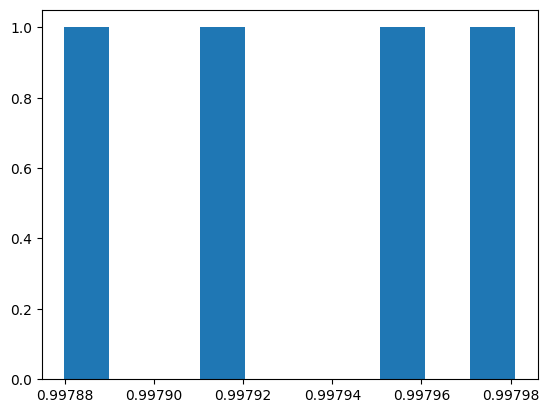

Train and Predict¶
This example notebook walks through the steps of training a new model then using that model with Planet Scope imagery to predict snow covered areas (SCA).
[1]:
import glob
import matplotlib.pyplot as plt
import pandas as pd
import xarray as xr
import planetsca as ps
/home/jovyan/envs/planetenv/lib/python3.9/site-packages/tqdm/auto.py:21: TqdmWarning: IProgress not found. Please update jupyter and ipywidgets. See https://ipywidgets.readthedocs.io/en/stable/user_install.html
from .autonotebook import tqdm as notebook_tqdm
Train a new model¶
Open the training data that we’ve previously created
[2]:
training_data_filepath = "./example_training_data/example_training_data.csv"
df_train = pd.read_csv(training_data_filepath)
[3]:
df_train.head()
[3]:
| blue | green | red | nir | label | |
|---|---|---|---|---|---|
| 0 | 0.3814 | 0.3949 | 0.3867 | 0.4345 | 0 |
| 1 | 0.3843 | 0.3917 | 0.3815 | 0.4254 | 0 |
| 2 | 0.3790 | 0.3907 | 0.3750 | 0.4305 | 0 |
| 3 | 0.3828 | 0.3830 | 0.3826 | 0.4229 | 0 |
| 4 | 0.3821 | 0.3759 | 0.3877 | 0.4065 | 0 |
Specify where we’d like to save our new model, as well as some information about the model performance
[12]:
new_model_filepath = "./example_model/example_random_forest_binary_sca.joblib"
new_model_score_filepath = "./example_model/example_random_forest_binary_sca_scores.csv"
[5]:
model = ps.train.train_model(
df_train,
new_model_filepath,
new_model_score_filepath,
n_estimators=10,
max_depth=10,
max_features=4,
random_state=1,
n_splits=2,
n_repeats=2,
)
Repeat times: 4
F1-score: 0.99793 (0.00004)
Balanced Accuracy: 0.99468 (0.00013)
Accuracy: 0.99689 (0.00006)
Model saved to ./example_model/random_forest_20240116_binary_174K.joblib
Model scores saved to ./example_model/random_forest_20240116_binary_174K_scores.csv
Total time used: 25.2

Inspect the resulting model object
[13]:
model
[13]:
RandomForestClassifier(max_depth=10, max_features=4, n_estimators=10,
random_state=1)In a Jupyter environment, please rerun this cell to show the HTML representation or trust the notebook. On GitHub, the HTML representation is unable to render, please try loading this page with nbviewer.org.
RandomForestClassifier(max_depth=10, max_features=4, n_estimators=10,
random_state=1)Make predictions¶
Now use this model to predict SCA in a set of new Planet images
[14]:
# get a list of all the image filepaths
ps_image_filepaths = glob.glob("./example_images*/*/PSScene/*SR_clip.tif")
[15]:
# where we want to save the resulting SCA geotif images created from the Planet images
output_dirpath = "./example_images/SCA/"
[16]:
# run the model to predict
sca_image_paths = ps.predict.predict_sca(
planet_path=ps_image_filepaths,
model=model, # can also read model from filepath: new_model_filepath
output_dirpath=output_dirpath,
)
Start to predict: 20240116_174947_73_2483_3B_AnalyticMS_SR_clip.tif
Image dimension: (4, 374, 287)
Save SCA map to: ./example_images/SCA/20240116_174947_73_2483_3B_AnalyticMS_SR_clip_SCA.tif
Start to predict: 20240116_170700_24_24b0_3B_AnalyticMS_SR_clip.tif
Image dimension: (4, 374, 287)
Save SCA map to: ./example_images/SCA/20240116_170700_24_24b0_3B_AnalyticMS_SR_clip_SCA.tif
Start to predict: 20240127_174951_95_247d_3B_AnalyticMS_SR_clip.tif
Image dimension: (4, 374, 287)
Save SCA map to: ./example_images/SCA/20240127_174951_95_247d_3B_AnalyticMS_SR_clip_SCA.tif
Start to predict: 20240116_170156_41_24c1_3B_AnalyticMS_SR_clip.tif
Image dimension: (4, 374, 287)
Save SCA map to: ./example_images/SCA/20240116_170156_41_24c1_3B_AnalyticMS_SR_clip_SCA.tif
Start to predict: 20240116_174947_73_2483_3B_AnalyticMS_SR_clip.tif
Image dimension: (4, 374, 287)
Save SCA map to: ./example_images/SCA/20240116_174947_73_2483_3B_AnalyticMS_SR_clip_SCA.tif
Start to predict: 20240123_170724_19_24bc_3B_AnalyticMS_SR_clip.tif
Image dimension: (4, 374, 287)
Save SCA map to: ./example_images/SCA/20240123_170724_19_24bc_3B_AnalyticMS_SR_clip_SCA.tif
Visualize the results! (here we’ll just look at the first two)
[18]:
ps_image_filepaths.sort()
sca_image_paths.sort()
for ps_image_filepath, sca_image_filepath in zip(
ps_image_filepaths[:2], sca_image_paths[:2]
):
ps_image = xr.open_dataset(ps_image_filepath)
sca_image = xr.open_dataset(sca_image_filepath)
fig, [ax1, ax2] = plt.subplots(nrows=1, ncols=2, figsize=(10, 5), tight_layout=True)
ps_image.isel(band=0).band_data.plot(ax=ax1, cmap="Greys_r", add_colorbar=False)
sca_image.isel(band=0).band_data.plot(ax=ax2, cmap="Greys_r", add_colorbar=False)
ax1.set_title(ps_image_filepath.split("/")[-1])
ax2.set_title(sca_image_filepath.split("/")[-1])
[ ]: